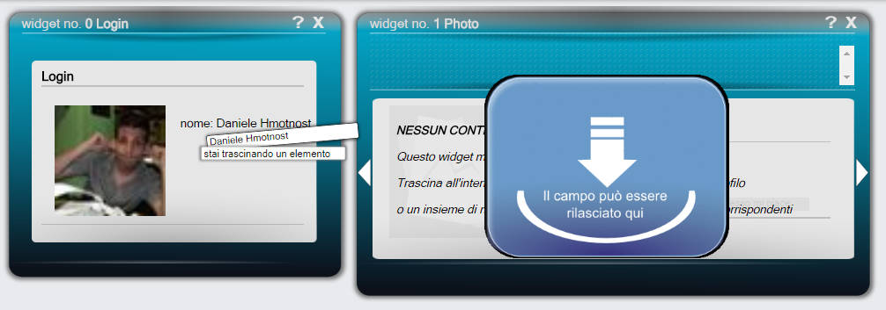

I widget, per poter funzionare, devono essere collegati ad altri widget. Quando ne viene inserito uno all'interno dell'area di lavoro, non viene mostrato nulla al suo interno. Di fatto il widget non è ancora stato collegato a nessuno e non sa ancora quali informazioni o di chi tu voglia visualizzare. Per questo motivo dovrai cliccare su un campo presente all'interno di un altro widget e trascinarlo all'interno del widget appena inserito per effettuare il collegamento. Se, ad esempio, intendi visualizzare tutte le foto di un tuo amico, ti basterà trascinare il nome o la foto del profilo del tuo amico all'interno del widget "photos". Puoi trascinare anche molteplici campi uno dopo l'altro e il widget si aggiornerà mostrando tutte le informazioni che hai richiesto. Non appena cliccherai su un campo ti verranno mostrati tutti i widget su cui puoi rilasciarlo per effettuare il collegamento.

Una volta collegato, il widget aggiornerà le proprie informazioni interne mostrando tutti i dati ottenuti e inoltre modificherà la propria posizione sulla base della dipendenza appena creata. Inoltre verrà inserito, nella barra superiore del widget, l'elemento di connessione in cui verrà mostrato il numero di elementi in ingresso. Cliccandoci sopra sarà possibile vedere tutti gli elementi che stanno entrando all'interno del widget. Sarà quindi possibile eliminarne o ripristinarne alcuni o elminare completamente il collegamento.